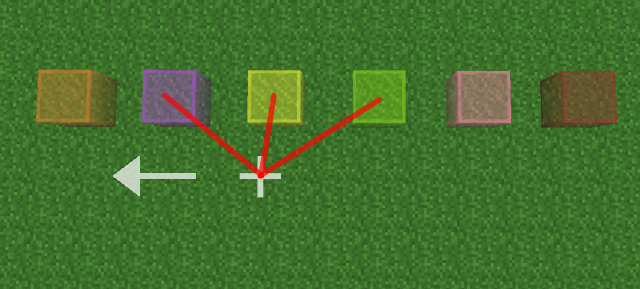

6. Advanced OpenGL
This section will describe how vertex data is organized in GPU buffers. Reading the source code won't be of any help, if you want to have the beginning of a chance to understand and/or modify that part of the pipeline, read this section, otherwise, you'll get lost.
Pre-requisite: C programming language and OpenGL pipeline.
Advanced OpenGL
This section will explain some aspects of rendering pipeline.
Handling translucent blocks
That part was probably one of the biggest crap shoot to implement. 2 attempts were tried (depth peeling and fragment sorting on the GPU), but ultimately were entirely discarded because of serious shortcomings in the way they inherently work. Therefore the first 2 sections are a reminder to not waste your time with these techniques.
Fragment sorting on GPU (Order Independent Transparency)
In the OpenGL red book ninth edition, there is a fully working example for handling alpha transparency in a completely generic and 100% accurate way, for any type of geometry, entirely on the GPU. The implementation seemed elegant, not very intrusive, therefore rather easy to integrate, and indeed handle absolutely all use cases.
The basic idea with this technique is this:
Instead of writing translucent fragment directly in the main framebuffer, within the fragment shader, you write them in a (very big) linked list. Thanks to OpenGLv4 atomic types and counters, this can be achieved rather easily.
The linked list is implemented using 2 textures: one texture the size of the framebuffer, where each pixel will actually store the head of the linked list as a 32bit integer. The second texture will contain the fragments (unsorted). For each element in this texture, we need: the RGBA color (32bit int), the depth value (32bit float) and the next fragment in the list (32bit int), therefore 12 bytes per translucent fragment.
Once all fragments has been written in that list, you start a second pass to write them in the framebuffer, by using the head texture to get all translucent fragment at given position, sort them by decreasing depth, combining them using pre-multiplied alpha and finally writing the result into the framebuffer (ie: returning the final color from the fragment shader).
That technique works indeed fine, except that it requires too much bandwidth for integrated graphics (like just having 2 quads close to the camera will make the GPU lag quite a bit). Also, this techniques requires advanced features of OpenGL 4.3+: a bit overkill for something like this.
Depth peeling
This is another technique to handle alpha transparency in a completely generic way, with 100% accuracy, and mostly handled by the GPU. The idea behind this technique is as follows:
Once again instead of writing the fragments directly in the main framebuffer, you write them into another one (that has one color and two depth buffers). Obviously on that framebuffer, you will have to manage both depth buffers on your own. The first depth buffer needs to be initialized to the min value, and the second to the max value.
On the CPU side, you start a loop with the number of "peel" of transparency you want to uncover. There is a technique to get the exact number of loop, but as a starting point use an arbitrary number, like 2 or 3.
In the fragment shader handling translucent triangles, you overwrite the color only if the depth of the fragment is higher than the value currently stored in the first depth buffer (ie: farther) and lower than the second one (ie: nearer). If the fragment passes both tests, update the first depth buffer to the depth of the fragment. If outside of that range, discard the fragment.
Doing so, you just extracted the first layer of the farthest translucent fragments. You can now merge the color buffer with the main framebuffer, using a trivial shader and a quad covering the entire screen.
You might think that the first depth buffer could be managed by OpenGL using a depth test set to GL_GREATER, but we will need the result of that test later.
Next step is to swap the first and second depth buffer, initialize the (new) first depth buffer to the min value, clear the color buffer and continue with the next iteration of the loop.
On the second iteration, you'll have extracted the second farthest layer of translucent fragments.
The main problem with this approach is getting the exact number of loops required to draw all the transparent fragments: if you do too little, some geometry will be missing and if you do too many loops, you are going to waste time doing completely unnecessary work. But, due to the asynchronous nature of GPUs, this value is not that trivial to get without stalling the pipeline.
One way to do this, is to use a generic buffer accessed through an atomic operator, like atomicOr(), to be called whenever at least one fragment is discarded due to the being replaced by a farther fragment, that is testing against the first depth buffer. If the fragment is discarded when tested against the second depth buffer, that means this fragment has already been processed, and therefore should not update the flag buffer. If at the end of a loop this buffer contains a non-zero value, it means there are fragments that still need processing.
Sadly, once your loop is done, you cannot read the content of the buffer, to know if you should continue or stop. Due to the asynchronous nature of OpenGL, the only moment where it is safe to do so, is when swapping the back/front framebuffer (ie: SDL_GL_SwapBuffers()). At this point you know that, the GPU is done with the previous frame, and the content of the buffer is accurate now.
Worse: if there was not enough loops, at this point you can only increase the number of loops by one. If your scene just switched from one layer of transparency to one containing a lot, even at 60 frames per second, you'll be able to see the translucent layers being peeled frame per frame, as the number of loops is increased one by one. This is going to be particularly jarring to see because layers are extracted from back to front.
This is far from ideal in practice, and this technique has somewhat the same problem than the linked list of fragments: it requires too much bandwidth and/or up to date OpenGL implementation, which makes it particularly annoying to debug when something goes wrong.
Triangles sorting on CPU
The technique that is ultimately used in this engine is simply sorting the triangles from farthest to nearest. As with the previous 2 techniques, it has its own shortcomings: it is not 100% accurate (typical use case where it fails: 2 intersecting triangles/quads), and since the sorting is done on the CPU, it is going to lag the rendering whenever there are too many triangles to sort.
It has its advantages though:
- It is very straightforward to implement and debug (well, compared to hardware accelerated sorting).
- A voxel engine has a lot of tricks you can use to considerably reduce the amount of sorting needed.
In this engine, the sorting is actually divided in 2 parts. All sorting algorithms have to assume that one of the operations necessary to sort items is going to be cheap: either comparison or moving memory (ideally both). In this case, neither of them are particularly cheap if we were to use the vertex data as direct source. That's why we create a first array which is both cheap to move its individual items around (just 8 bytes per item) and to compare those items (subtract two 32bit integers).
Once this array has been sorted, we use it to move vertex data. Thanks to the information stored in that secondary array, each quads from the vertex array has to be moved at most 2 times (and most of the time, data will be copied from one place of the array to another, ie: using one memcpy).
Triangles are sorted by whole quads (ie: 6 vertices at a time, ie: 2 triangles), because the meshing phase actually only generates quads. The distance used to sort triangles is actually the distance from the camera to the center of the whole quad, that distance being converted to fixed point.
The sorting itself is handled by the good old libc qsort().
To reduce the amount of sorting needed, a few tricks are used:
- Chunks are sorted by the frustum culling: the frustum culling function already builds a list of chunks that are roughly sorted from front to back. It is not perfect, but as far as alpha transparency is concerned, it is good enough. Which means:
- Vertex sorted per chunk: we only have to sort the alpha triangles on a per chunk basis. Which means all the chunks hidden by frustum/caves don't have to be processed whatsoever. Also since vertex data is already stored per chunk, usually in non-contiguous memory segment, it would have been a major inconvenience to have to sort them globally.
- Viewing angles threshold: the list of visible chunks can change every time the model-view
matrix is changed (which is to say quite often). Still, it is not required to sort the triangles
every time the yaw/pitch/position are changed.
For the yaw/pitch, their values are stored in a chunk at the time of sorting. If these values change later, the sorting will be redone only if one of angles differ for more than 45°.
The position is only taken in account for the chunk the player currently is. Consider the following situation:
The plus sign marks the player position: the yellow block is the closest (therefore drawn last), while the purple and green are farther (therefore drawn first). If the player were to move in the direction pointed by the arrow, at some point, the yellow block will become farther than the purple, therefore the draw order needs to be changed. That's why the current chunk is reordered whenever the player position changes.
- Last, but not least, there are use cases where sorting is completely unnecessary. If you
can somewhat prove that the alpha triangles cannot overlap each other, then you can draw them
in any order you want. This is particularly the case for ocean surface: a simple flat plane of alpha
triangles. Sorting them is a total waste of CPU time, and indeed if you were to sort them anyway,
you'd get some noticeable lag spike once the angle threshold is reached. In the middle of an ocean,
with a 16 chunk render distance, there can be more than a hundred of these to sort, and it is completely
unnecessary.
The heuristic that has been implemented in this engine, is to check if the entirety of the alpha triangles in a sub-chunk lies in a particular axis-aligned plane. If so, the chunk is marked as not requiring any sorting to be made (but it still has to be rendered at the same time as other translucent chunks).
Again, when you are surrounded by large bodies of water, this trick helps a lot.
Managing chunks on the GPU
Chunks are rendered using instance rendering, which helps reduce the overhead of OpenGL draw calls, at the price of a bit more work on the CPU side in order for the GPU to do its work.
In a nutshell, chunks are stored in banks, which are pretty big memory segments (or vertex buffer objects) stored on the GPU (as of writing this, there are 20Mb in size). These segments are then managed using a custom allocator, where the meta-data used to track free/used memory is of course stored on the CPU.
Vertex buffers
The code is located in render.c:renderStoreArrays() and render.c:renderFreeArray(), and their sole purpose is to behave like a custom malloc() and free(). The only difference is that the actual memory is owned by the GPU.
To achieve this, there are 2 main datatypes:
- GPUBank: this is the datatype used to manage an entire segment. Segments cannot be reallocated (or at least, it is not advised to do it), therefore to allocate more memory, we'll have to create more of these segments. OpenGL draw commands can only deal with one primary segment (or VBO) at a time (VAO can deal with multiple VBO source, but they are processed in parallel, here we would need a serial access). Therefore to draw the geometry of a scene, we'll need at least as many draw commands as there are GPUBank involved in that scene (in practice, there will a lot more draw calls than just the terrain data).
- GPUMem: this datatype will track one allocation in a bank: the entire mesh of chunk will be stored here. That includes opaque and translucent triangles. The memory segment will be divided in 2: opaque triangles are stored at the start, followed by the translucent ones. This information is actually stored at the ChunkData level (glSize: total size in bytes of vertex data, glAlpha: size of alpha triangles in bytes, located at the end): the reason is because that information is needed in a few places, and the GPU datatypes are private to the render module.
Frustum culling will give us a list of ChunkData to render. The only thing to do is to "sort" them by GPUBank and fill-in the glMultiDrawArraysIndirect() data structures. There are 2: one for the indirect command (16 bytes per chunk) and one for model data (12 bytes per chunk, ie: 3 floats). This VBO model is part of the VAO of the GPUBank, but has a glVertexAttribDivisor() set to 1 (ie: only grab one vertex data per instance). It simply contains the position to offset all the triangles of that ChunkData.
There is one particular parameter that is critical to track though: it is the number of commands that will be issued in a single glMultiDrawArraysIndirect() call (vtxSize). Keep in mind that opaque and translucent meshes will be stored in the same buffer commands: therefore if a chunk has both an opaque and an alpha mesh, that number will be increased by 2.
Knowing the total number of draw commands is critical in setting up the glMultiDrawArraysIndirect() command buffer, particularly the baseInstance field. Translucent chunk commands need to be filled from end to start in this buffer (because frustum culling sort them from front to back). If that vtxSize is incorrect, baseInstance will be off, and translucent fragment will not appear where they should.
Vertex data
This section will describe how vertex data are stored on the GPU. Being the central piece of any voxel engine, this part had a decent amount of thoughts put into it (and quite a few refactoring).
Terrain meshes only need quads to be rendered (not necessarily axis aligned), and since there
are a lot of them you might want to store them efficiently: a typical
This engine compress each quad down to 32 bytes (stored as 8 32bit unsigned integer), that means viewing a world on a far render distance (16 chunks) usually requires about 50 to 100Mb of memory on the GPU side (just for the vertex buffers, textures and FBO will add a lot to the total). The vertex data is processed as GL_POINTS, and split into GL_TRIANGLE_STRIP in a geometry shader.
The geometry shader allows another trick: bypass back-face culling. Otherwise, you'll need to double some quads just to always have a front and back face. Having done quite a few performance tests, the framerate of a voxel engine is more or less directly proportionnal to the number of quads to process. You want to keep that number of quads as low as possible.
In case you are curious, these are the tests that have been done:
- Not using a geometry shader: very little, if any, performance gain.
- Discarding quads in the geometry shader: if done late, very little, if any, performance gain.
There was an attempt at discarding leaf blocks if they were far away and behind another leave quad,
because mipmaps would turn translucent texture into a fully opaque one, if the quad becomes small enough.
you could only do this at the end, where 90% of computations were already done by this point.
Discarding them early helps a bit, but not as much as not sending them to the GPU.
- Methods for feeding vertices to the GPU don't matter that much, as long as buffers are big enough: using indexed rendering, unoptimized data storage (not compacting vertex data, ie: using floats for everything), using all kinds of hack with texture to transmit per model information (instead of attribute divisor): all of these have very little impact on performance.
In all the testing, it boils down to:
- Number of vertices/quads the GPU has to process.
- Complexity of shaders: using expensive computation and/or too many variables (which limits the number of instance of the shader on the GPU) can have big impact of performance.
For integrated graphics, bandwidth can be a serious limition. Integrated graphics have a few Gb/s of budget, whereas chips with dedicated memory are closer to 100Gb/s (20 to 50 times more). But for a voxel engine, even a few Gb/s should be enough for most use cases.
The format of each quad is as follows (stored in VBO as 8 uint32_t):
As of writing this, 13bits are unused. Each field has the following meaning:
- Xi, Yi, Zi: to represent a QUAD, you need
at least 3 coordinates. QUAD are not necessarily axis aligned, otherwise you could get away
with only 2 points.
The coordinates are encoded as a fixed point number on 16bits. Because some models slightly exceed their voxel space, and as such can also exceed a chunk bounding box (like torches attached to wall). Therefore, the minimum range of coordinates should be between -0.5 and 16.5, but to make computation easier, the range of values is between -8 and 24.
Each voxel cube is therefore divided in 65536 / 32 = 2048 parts, which is largely enough to accomodate all the models that are not a full block from
Minecraft 1.12. To convert from fixed to floating point, the formula is:vec3 position = (fixed - 16384) * (1 / 2048.)
- OCS: ambient occlusion value for 4 vertices, each value being encoded on 2bits.
- extocs: 8bits of extra data for applying OCS. This and the OCS fields are way too complicated to be explained here. They will be described in the mesh generation chapter.
- U, V: coordinates of the top left corner of the texture to use for this QUAD (vertex V2, see below) and bottom right corner (vertex V3).
- N: normal of the face, encoded as 0: south, 1: east, 2: north, 3: west, 4:top, 5: bottom, 6: recompute from vertices. The vast majority of quads are axis-aligned, and therefore unnecessary to recompute the normal. Those that are not will have their normal recomputed and shading per face adjusted accordingly.
- X: knowing the texture coordinates of 2 vertices is not enough to fully find all the coordinates of the 2 remaining vertices. At this point there are 2 possibilities: keep U or V coordinate for V2 and V1. This is the purpose of this bit: if set to one, keep X for V1.
- D: dual-sided quad: this quad must not be culled by the back-face culling test of OpenGL. Vertex data will be rearranged in the geometry shader to make the test pass, without the need of extra vertices (this is achieved by swapping V1 and V2, V3 and V4).
- L: not-so-pretty hack for very crude handling of liquid. XXX needs to be removed.
- W: this quad is underwater: it will affect how fog is applied when the player is underwater (otherwise it is ignored): these quads will have a blue tint, instead of using the atmospheric texture.
- E: extended OCS has been filled (extocs). In the fragment shader, these have a dedicated (and scary) code path.
- R: repeat texture. The texture coordinates when quads are merged with greedy meshing are much bigger to allow OpenGL to perform texture mapping with perspective projection. The fragment shader will have to use a modulo operation to bring the texture back to its intended range.
- Sky / Block: a direct dump of the NBT tables Skylight and BlockLight. Obviously used for lighting purpose: 1 value per vertex, same order as OCS/texure U, V.
In the geometry shader, this is the information that will be sent to the fragment shader:
Two triangles will be constructed out of the 4 vertices: V1 - V2 - V3 and V3 - V2 - V4. Then, each face will be decomposed like this:

This shows how each face is constructed from the cube vertices. The arrow inside the face shows how the OCS/Sky/Block values are extracted: from least significant bits to most significant, with start of arrow = first item, arrow end = last item, 4 values in total. The axis shows where the 0, 0, 0 coordinates are (if the cube were to be rendered at 0, 0, 0) and where they increase with positive values.
However, this vertex format is not easy to work with: it involves a lot of tedious bit shifting
and code logic to extract all the information about a quad. The mesh of objects have to be analyzed for
generating bounding box and face visibility for example. That's why this engine uses another vertex data
format. It is actually used by everything, but terrain information: custom block models, inventory models,
entities models, bounding boxes, ...
Although this is only 10 bytes (5 uint16_t), this only encodes a single vertex. You need 6 of these to form a quad, that is 60 bytes per GL_QUAD. At some point in time, the terrain data was also based on this vertex data. Given how tedious it was to adapt all the rendering code to the 28 bytes per quad version, it was decided to keep the compressed data for terrain only.